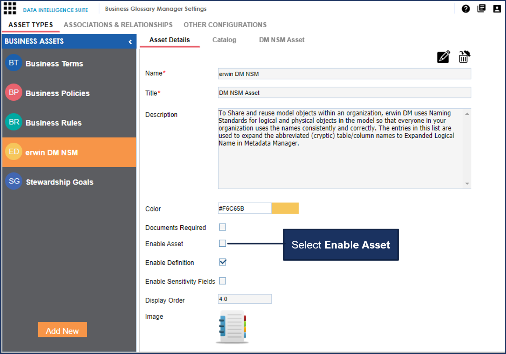
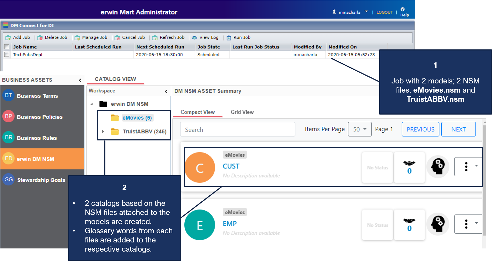

If the models selected in a job have NSM files associated with them, DM connect for DI exports them to the Business Glossary Manager under the custom asset, erwin DM NSM.
Ensure that the erwin DM NSM asset is enabled under erwin DI Suite > Business Glossary Manager Settings.

Under the erwin DM NSM asset, each unique NSM file is added as a catalog.

In a job, if a single NSM file is associated with multiple models, a single catalog is created for both models. The contents of the corresponding catalog under the erwin DM NSM asset type in Business Glossary Manager are overwritten.
In a job, if multiple NSM files are associated with multiple models, multiple catalogs, corresponding to the NSM files are created under the erwin DM NSM asset type in Business Glossary Manager.